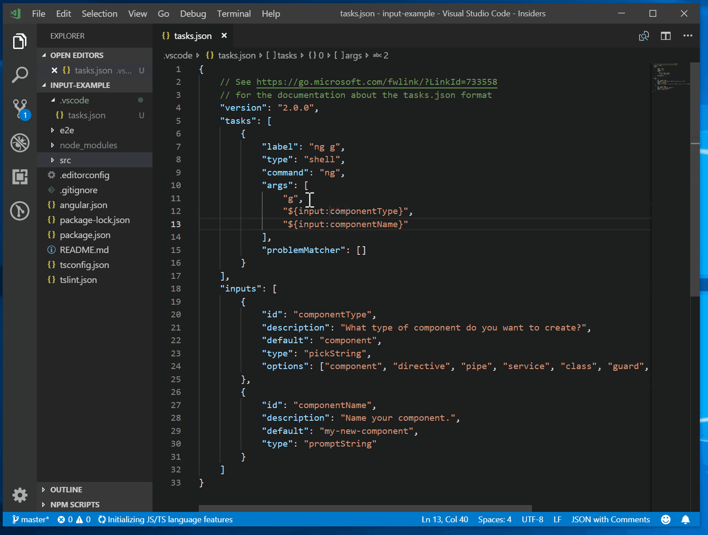

变量参考
Visual Studio Code 支持调试和任务配置文件以及一些特定设置中的变量替换。在 launch.json 和 tasks.json 文件中，通过使用 ${variableName} 语法，部分键和值字符串支持变量替换。
预定义变量
支持以下预定义变量：
| 变量 | 描述 | ||
|---|---|---|---|
| -------------------------------- | --------------------------------------------------------------------- | ||
| ${userHome} | 用户主文件夹的路径 | ||
| ${workspaceFolder} | 在 VS Code 中打开的文件夹的路径 | ||
| ${workspaceFolderBasename} | 在 VS Code 中打开的文件夹的名称，不含任何斜杠（/） | ||
| ${file} | 当前打开的文件 | ||
| ${fileWorkspaceFolder} | 当前打开的文件所在的工作区文件夹 | ||
| ${relativeFile} | 当前打开的文件相对于 workspaceFolder 的路径 | ||
| ${relativeFileDirname} | 当前打开的文件相对于 workspaceFolder 的目录名 | ||
| ${fileBasename} | 当前打开的文件的基名 | ||
| ${fileBasenameNoExtension} | 当前打开的文件的基名，不含文件扩展名 | ||
| ${fileExtname} | 当前打开的文件的扩展名 | ||
| ${fileDirname} | 当前打开的文件所在的文件夹路径 | ||
| ${fileDirnameBasename} | 当前打开的文件所在的文件夹名称 | ||
| ${cwd} | 任务运行器在 VS Code 启动时的当前工作目录 | ||
| ${lineNumber} | 活动文件中当前选中的行号 | ||
| ${columnNumber} | 活动文件中当前选中的列号 | ||
| ${selectedText} | 活动文件中当前选中的文本 | ||
| ${execPath} | 正在运行的 VS Code 可执行文件的路径 | ||
| ${defaultBuildTask} | 默认生成任务的名称 | ||
| ${pathSeparator} | 操作系统用于分隔文件路径中各组件的字符 | ||
| ${/} | ${pathSeparator} 的简写 |
预定义变量示例
假设您满足以下条件：
- 在编辑器中打开了一个位于
/home/your-username/your-project/folder/file.ext的文件； - 目录
/home/your-username/your-project作为您的根工作区打开。
这将导致每个变量具有以下值：
- ${userHome}：
/home/your-username - ${workspaceFolder}：
/home/your-username/your-project - ${workspaceFolderBasename}：
your-project - ${file}：
/home/your-username/your-project/folder/file.ext - ${fileWorkspaceFolder}：
/home/your-username/your-project - ${relativeFile}：
folder/file.ext - ${relativeFileDirname}：
folder - ${fileBasename}：
file.ext - ${fileBasenameNoExtension}：
file - ${fileExtname}：
.ext - ${fileDirname}：
/home/your-username/your-project/folder - ${fileDirnameBasename}：
folder - ${lineNumber}：光标所在行号
- ${columnNumber}：光标所在列号
- ${selectedText}：在代码编辑器中选中的文本
- ${execPath}：Code.exe 的位置
- ${pathSeparator}：在 macOS 或 Linux 上为
/，在 Windows 上为\[!TIP]
在
tasks.json和launch.json的字符串值中使用 IntelliSense 可获取完整的预定义变量列表。平台和工作区注意事项
平台特定行为
某些预定义变量可能会根据操作系统的不同而有不同的解析结果：
- 在 Windows 上，文件路径使用反斜杠（
\）。在tasks.json或launch.json等 JSON 文件中组合路径时，确保反斜杠正确转义（例如："${workspaceFolder}\\subdir"）。 - 在 macOS 和 Linux 上，文件路径使用正斜杠（
/）。
建议使用 ${pathSeparator} 或 ${/} 使配置在跨平台间可移植。
每个工作区文件夹范围的变量
通过将根文件夹的名称附加到变量后面（用冒号分隔），可以访问工作区中的同级根文件夹。如果没有指定根文件夹名称，则该变量的作用域限定为使用它的同一文件夹。
例如，在一个包含 Server 和 Client 文件夹的多根工作区中，${workspaceFolder:Client} 指的是 Client 根文件夹的路径。
环境变量
您可以使用 ${env:Name} 语法引用环境变量。例如，${env:USERNAME} 引用了 USERNAME 环境变量。
{
"type": "node",
"request": "launch",
"name": "Launch Program",
"program": "${workspaceFolder}/app.js",
"cwd": "${workspaceFolder}",
"args": [ "${env:USERNAME}" ]
}配置变量
要引用 VS Code 设置（_配置_），请使用 ${config:Name} 语法。例如，${config:editor.fontSize} 引用了 editor.fontSize 设置。
命令变量
您可以使用 ${command:commandID} 语法将任何 VS Code 命令作为变量使用。
命令变量会被替换为命令求值的（字符串）结果。命令的实现可以是一个简单的无 UI 计算，也可以是基于 VS Code 扩展 API 提供的 UI 功能的复杂功能。如果命令返回的并非字符串，则变量替换将无法完成。命令变量必须返回一个字符串。
此功能的一个示例是 VS Code 的 Node.js 调试器扩展，它提供了一个交互式命令 extension.pickNodeProcess，用于从所有正在运行的 Node.js 进程列表中选择单个进程。该命令返回所选进程的进程 ID。这使得可以在按进程 ID 附加的启动配置中以如下方式使用 extension.pickNodeProcess 命令：
{
"configurations": [
{
"type": "node",
"request": "attach",
"name": "Attach by Process ID",
"processId": "${command:extension.pickNodeProcess}"
}
]
}在 launch.json 配置中使用命令变量时，包含它的 launch.json 配置会作为对象通过参数传递给该命令。这使得命令在被调用时能够了解特定 launch.json 配置的上下文和参数。
输入变量
命令变量虽然已经非常强大，但缺乏一种为特定用例配置要运行的命令的机制。例如，无法向通用的"用户输入提示"传递提示消息或默认值。
这一限制可以通过输入变量来解决，其语法为 ${input:variableID}。variableID 指向 launch.json 和 tasks.json 的 inputs 部分中的条目，其中指定了额外的配置属性。不支持输入变量的嵌套。
以下示例展示了使用输入变量的 tasks.json 的整体结构：
{
"version": "2.0.0",
"tasks": [
{
"label": "task name",
"command": "${input:variableID}",
// ...
}
],
"inputs": [
{
"id": "variableID",
"type": "type of input variable",
// type specific configuration attributes
}
]
}目前 VS Code 支持三种类型的输入变量：
- promptString：显示输入框以从用户那里获取字符串。
- pickString：显示快速选择下拉列表，让用户从多个选项中选择。
- command：运行任意命令。
每种类型都需要额外的配置属性：
promptString：
- description：在快速输入中显示，为输入提供上下文。
- default：如果用户未输入其他内容，将使用的默认值。
- password：设置为 true 则以密码提示方式输入，不会显示键入的值。
pickString：
- description：在快速选择中显示，为输入提供上下文。
- options：供用户选择的选项数组。
- default：如果用户未输入其他内容，将使用的默认值。它必须是选项值之一。
选项可以是字符串值，也可以是一个同时包含标签和值的对象。下拉列表将显示 label: value。
command：
- command：在变量插值时运行命令。
- args：传递给命令实现的可选选项包。
下面是一个使用 Angular CLI 说明 inputs 用法的 tasks.json 示例：
{
"version": "2.0.0",
"tasks": [
{
"label": "ng g",
"type": "shell",
"command": "ng",
"args": [
"g",
"${input:componentType}",
"${input:componentName}"
],
}
],
"inputs": [
{
"type": "pickString",
"id": "componentType",
"description": "What type of component do you want to create?",
"options": ["component", "directive", "pipe", "service", "class", "guard", "interface", "enum"],
"default": "component"
},
{
"type": "promptString",
"id": "componentName",
"description": "Name your component.",
"default": "my-new-component"
}
]
}运行示例：

以下示例展示了如何在调试配置中使用类型为 command 的用户输入变量，该配置允许用户从特定文件夹中找到的所有测试用例列表中选择一个测试用例。假设某个扩展提供了 extension.mochaSupport.testPicker 命令，该命令在可配置的位置定位所有测试用例并显示选择器 UI 以供用户选择其中一个。命令输入的参数由命令本身定义。
{
"configurations": [
{
"type": "node",
"request": "launch",
"name": "Run specific test",
"program": "${workspaceFolder}/${input:pickTest}"
}
],
"inputs": [
{
"id": "pickTest",
"type": "command",
"command": "extension.mochaSupport.testPicker",
"args": {
"testFolder": "/out/tests",
}
}
]
}命令输入也可以用于任务。在此示例中，使用了内置的终止任务命令。它可以接受一个参数来终止所有任务。
{
"version": "2.0.0",
"tasks": [
{
"label": "Terminate All Tasks",
"command": "echo ${input:terminate}",
"type": "shell",
"problemMatcher": []
}
],
"inputs": [
{
"id": "terminate",
"type": "command",
"command": "workbench.action.tasks.terminate",
"args": "terminateAll"
}
]
}常见问题
调试配置或任务中变量替换的细节
调试配置或任务中的变量替换是一个两遍过程：
- 在第一遍中，所有变量都会被求值为字符串结果。如果一个变量出现多次，则只会求值一次。
- 在第二遍中，所有变量都会被替换为第一遍的结果。
由此产生的一个后果是，变量的求值（例如，扩展中实现的基于命令的变量）无法访问调试配置或任务中其他已替换的变量。它只能看到原始的变量。这意味着变量不能相互依赖（这确保了隔离性，并使替换在求值顺序方面具有鲁棒性）。
用户和工作区设置中是否支持变量替换？
预定义变量在 settings.json 文件中的少数设置键中受支持，例如终端的 cwd、env、shell 和 shellArgs 值。某些设置如 setting(window.title) 具有自己的变量：
"window.title": "${dirty}${activeEditorShort}${separator}${rootName}${separator}${appName}"请参阅设置编辑器（kb(workbench.action.openSettings)）中的注释以了解特定于设置的变量。
为什么没有 ${workspaceRoot} 的文档？
变量 ${workspaceRoot} 已被弃用，取而代之的是 ${workspaceFolder}，以便更好地与多根工作区支持保持一致。
为什么 tasks.json 中的变量没有被解析？
并非 tasks.json 中的所有值都支持变量替换。具体来说，只有 command、args 和 options 支持变量替换。inputs 部分中的输入变量将不会被解析，因为不支持输入变量的嵌套。
如何知道变量的实际值？
检查变量运行时值的一个简单方法是创建一个 VS Code 任务，将变量值输出到控制台。例如，要查看 ${workspaceFolder} 的解析值，您可以在 tasks.json 中创建并运行（终端 > 运行任务）以下简单的 'echo' 任务：
{
"version": "2.0.0",
"tasks": [
{
"label": "echo",
"type": "shell",
"command": "echo ${workspaceFolder}"
}
]
}